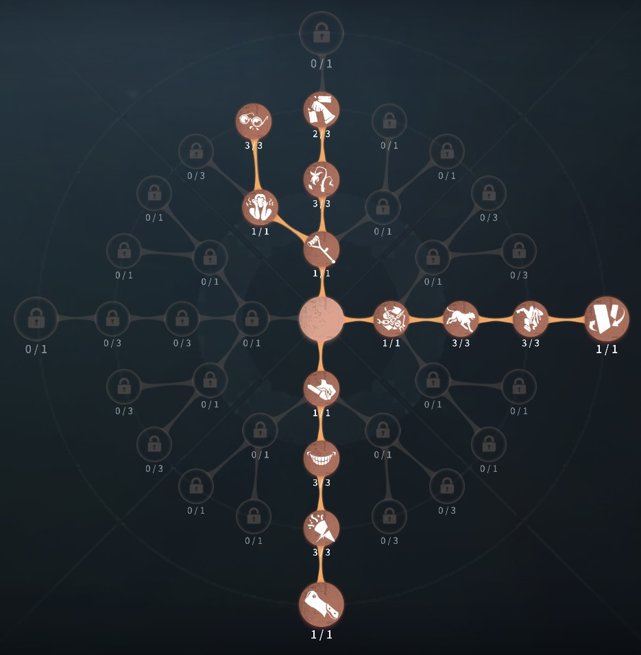
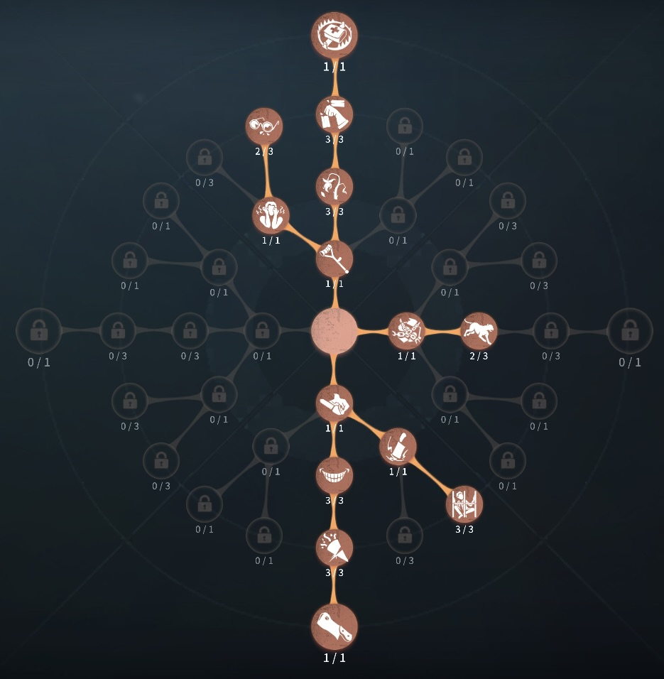

使徒（アン）
圧倒的分けハンター
外在特質とスキル
特質1:影を踏む
・猫は障害物を貫通して移動する。猫の分裂後、警戒半径と麻痺エリアが拡大していく。エリアは猫の移動時間に応じて拡大する。・警戒半径
サバイバーが猫の警戒半径に入ると猫はサバイバーに噛みつき10秒間存在する。
・麻痺エリア
サバイバーに嚙みついた状態で使徒が麻痺エリアに入った時エリア内の全てのサバイバーを2.5秒間動きを止める。短時間内に連続でスタンすると、2回目のスタン時間は1秒になる。
存在感0：急襲、ランウェイ
・急襲前方に猫を出す。再度スキルボタンをタップすると猫が分裂する。 猫は5秒後に自動的に分裂される。分裂した後は5秒間走った後５秒間停止する。猫の付近のサバイバーは位置が表示される。
分裂させた後再度スキルボタンをタップすることで猫が威嚇し麻痺エリア内にいるサバイバーは10秒間暗号機解読、治療、アイテムの使用ができなくなる。その後スキルはクールタイムに入る。
・ランウェイ
猫を分裂させた後どちらかの猫を選択し、猫に向けてダッシュする。
存在感1：ガイド
・アンが指定した位置に墓標を生成する。サバイバーに噛みついていない猫は、墓標の地点目掛けて折り返し、同時に存在可能時間がリセットされる。存在感2：超感覚
・ランウェイのダッシュ速度が上昇、最大チャージ数が2に増加する。ハンターの立ち回り方
1. 初動の立ち回り
使徒（アン）は徒歩ハンターのため、最も追いやすい定番スポーンに向かうことが推奨される。距離とりサバイバーには注意が必要
・試合開始直後:
✅
移動速度を上げるために即猫出し→即分裂→ランウェイ→威嚇を活用するのが有効です。特にスポーン選択が解放された後は、ハンターの位置がサバイバーに知られているため、これを利用して速攻を仕掛けられます。
・猫置きを活用:
✅
強ポジに猫を配置することで、強ポジを封印しながら距離を詰められます。
2. スキルの使い方
・猫の出し方:
・サバイバーを狙うよりも、進行方向と直角に出してランウェイを活用すると、効率よく接近できます。
・確実にサバイバーに猫を当てやすいポジにいってから猫をかませ、スタンさせよう。
・墓標の活用:
・墓標は強ポジを潰すために設置するのが有効です。
・使徒の墓標は、解放後に猫を出す方向を工夫することで、スタンを取りやすくなります。
・猫の威嚇:
・サバイバーとの距離が離れている場合、無理に当てようとせず、威嚇してCTを早めるのも有効な手段です。
・サバイバーとの距離が近く一発狙える場合にアイテム封印して確実な一発を狙う。
3. チェイス中の立ち回り
使徒は 猫のヒットが前提のチェイス
になるため、サバイバーの動きを読んで 最適なタイミングで猫を出す
ことが重要です。
✅ 板・窓の先に猫を配置する→
サバイバーが窓や板を越える瞬間に猫を出すと、確実にヒットしやすい。
✅ スタンが届かないと判断した場合、すぐに威嚇をする→
猫のクールタイムを早くあげるため
✅ 猫を無駄撃ちしない→ 使徒の猫は 再使用までのクールタイムがある
ため、適当に投げるとチェイスが長引く
4. 救助狩りの立ち回り
アンは 救助狩りが得意なハンター
であり、猫を活用することで救助を防ぐことができます。
・救助タイミングに合わせて猫を配置:
→ 救助直前に猫を発動し、
引き寄せで救助者を拘束すると、高確率で2撃目を与えられる。
サバイバーが
フェイントをかけてきても、猫を当てておけば強制的に動きを止められる。
・粘着:
→
粘着に来たサバイバーに猫をふませ、威嚇をすることで粘着を阻止する
→ またアンの足元に猫を配置することで、粘着に来れないようにする。
5. 注意点
アンを使う際には、以下の点に注意しましょう。
🔹 猫を無駄撃ちしない
→ クールタイムがあるため、無駄に使用すると
肝心な場面で使えなくなる。
🔹 サバイバーの動きを先読みする
→ サバイバーが 次にどこへ逃げるか
を予測し、猫を適切に配置することが重要。
おすすめの内在人格
裏向きカード型人格
この内在人格は、狂暴を最大化することで猫を椅子前に配置後、素殴りからの猫スタンで救助狩りを狙いやすくし、板割りでチェイスに特化させた人格

裏向きカード閉鎖空間型人格
この内在人格は、閉鎖空間、板割り最大化でファーストチェイスを早めに終わらせ、コントロールと狂暴で救助狩り、救助を急かし、救助４割越えを狙い、どんどん展開を早めていく人格


みんなのコメント